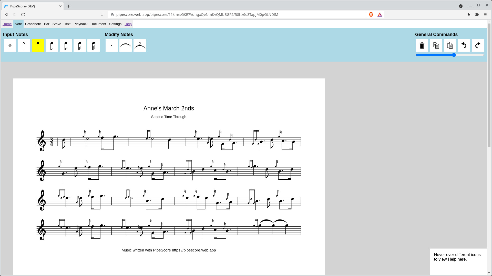
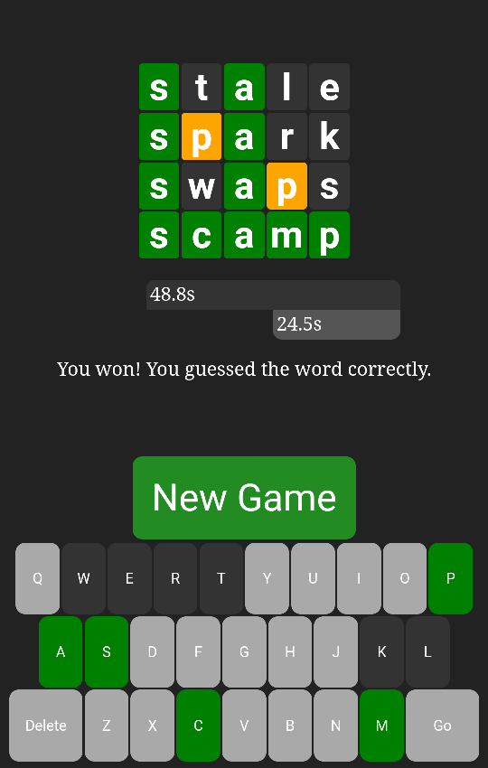
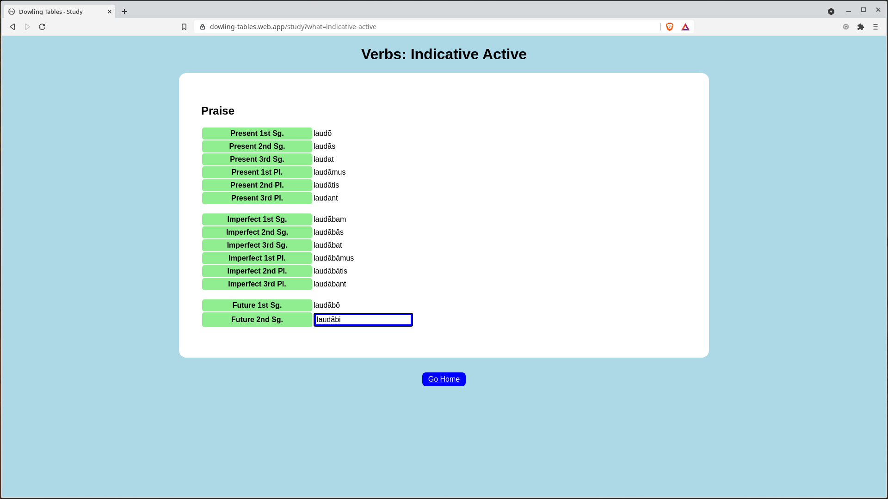
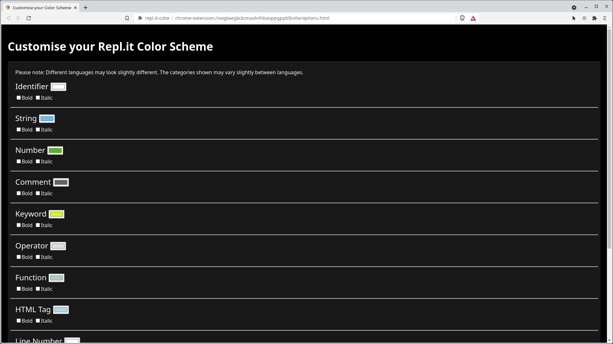

Projects
PipeScore
PipeScore is an online bagpipe notation app, for writing out pipe music.
Features include:
- Reactive embellishments - a faster way to input gracenotes
- Built-in documentation
- Undo / Redo
- Automatic note grouping and spacing
- Automatic saving
- Sharing using URLs
- Playback
- Parts, repeats, second timings
- Ties, triplets, time signatures, text boxes
- 8000 lines of code
Bullet Wordle
Bullet Wordle is a Wordle variant where two players play on the same board, and try to guess the word before each other and before their time runs out.
When you begin a game, you will be paired with another player also using the website.
Dowling Tables
The Dowling Tables help you to memorise the Latin declensions and conjugations necessary for the Dowling Method.
It supports macrons - even if your keyboard doesn't - and gives immediate feedback when you make a mistake.
GrannyPlant
GrannyPlant is a Progressive Web App to help granny manage her massive garden.
It replaces a set of huge cross-referenced Word documents.
The app works when offline, and allows adding/removing plants, searching plants, view plants by area, e.t.c.
Replit Colour
Replit colour is a Chrome extension that allows the customisation of the colour scheme on the popular replit IDE.
Using a simple colour-picker form, you can change the themeing of the editor to whatever you like.
Usage details here.
Over 200 users!